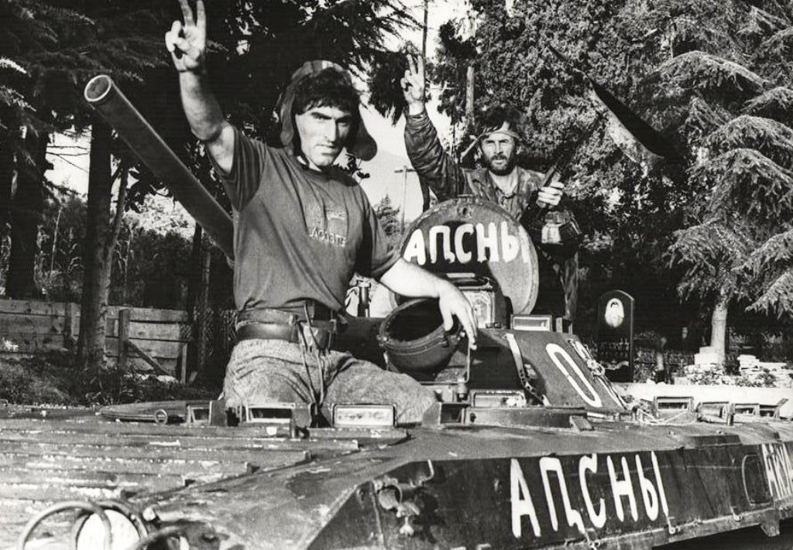

საქართველოსა და აფხაზეთს შორის კონფლიქტი 1989-1991 წლებში გამწვავდა. 1991 წელს აფხაზეთში მიიღეს ახალი საარჩევნო კანონი, რომელიც უმაღლეს საბჭოში უმრავლესობას ეთნიკურ უმცირესობას ანიჭებდა. ქართველებს წარმოადგენდა 26 დეპუტატი, აფხაზები კი 28 დეპუტატით, ხოლო სხვა ეთნიკურ ჯგუფებს ჰყავდათ 11 დეპუტატი. 1992 წელს აფხაზეთის ავტონომიური რესპუბლიკის ხელისუფლებამ დაიწყო მზადება დამოუკიდებლობისთვის და დაამყარა კონტროლი სამხედრო შენაერთებზე. 1992 წლის 24 ივნისს აფხაზეთის შინაგანი სამხედრო ფორმირების 60-კაციანი ჯგუფი თავს დაესხა აფხაზეთის შინაგან საქმეთა სამინისტროს, შეიპყრეს და სასტიკად სცემეს მინისტრი, ასევე ჩაატარეს უკანონო ჩხრეკა მის კაბინეტში. 23 ივლისს აფხაზეთის უზენაესმა საბჭომ აღადგინა რეგიონის 1925 წლის კონსტიტუცია, ფაქტობრივად გამოაცხადა დამოუკიდებლობა, რომელსაც ბოიკოტი გამოუცხადეს საბჭოს ქართველმა წევრებმა. 1992 წლის 14 აგვისტოს საქართველოს თავდაცვის ძალების კოლონა შევიდა აფხაზეთში თავდაცვის მინისტრ თენგიზ კიტოვანის ხელმძღვანელობით, რასაც მოჰყვა შეტაკება აფხაზ გვარდიელებთან. აფხაზურმა სამხედრო ნაწილებმა სოხუმი დაიკავეს და ვითარება უკიდურესად დაიძაბა. 16 აგვისტოს გაგრაში გაიმართა შეხვედრა ქართულ და აფხაზურ მხარეებს შორის, სადაც შეთანხმდნენ, რომ ქართული დესანტი გაგრაში არ შევიდოდა, განთიად-ლესელიძეში დარჩებოდა და იქიდან რკინიგზასა და გზატკეცილს გააკონტროლებდა. შეთანხმება ძალაში 16 აგვისტოს შევიდა, ხოლო 17 აგვისტოს აფხაზებმა სოფელ ბზიფთან შეიარაღებული პიკეტები მოაწყვეს და ქართულ-აფხაზური შენაერთები ერთმანეთს დაუპირისპირდნენ. საქართველომ წააგო ომი და ორასი ათასამდე ქართველმა დატოვა აფხაზეთი.